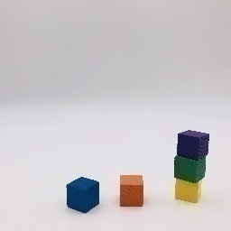

Building blocks of BIRD dataset
We used 6 wooden blocks, all being the different colors- Red (R), Green (G), Blue (B), Yellow(Y). Purple (P) and Orange (O) to construct the BIRD dataset. To limit the combinatorial expansion of possible cases, we assumed that an image can contain 5 blocks at maximum. We captured 7267 (6C0 + 6C1 + 6C2 + 6C3 + 6C4 + 6C5)* images consisting of all permutations of blocks, in the white background and uniform lighting conditions. Capturing the images manually, our idea was to create a realistic dataset rather than the rendered one, which will be further tested over natural images for evaluating generalization capability of AI systems.
Ground truth annotation of Images
In order to observe the performance of a perception module in isolation, we needed the ground truth about blocks present in the particular image. For each image we captured, we named the image file such that it captures information about blocks present in the image. Set of blocks sharing the same vertical axis, we denote as a ‘tower’. All the towers are named in order from left to right. Whereas within the tower, blocks are recorded in bottom to top manner. Each tower is described as fixed width tokens of length 6, separated with other towers by ‘-‘ symbol. 0 denotes the absence of the blocks.
For example,

is renamed as
B00000-O00000-YGP000-000000-000000-000000-000000.jpg, depicting that the image contains 3 different towers in total. The first tower contains only blue (B) block, the second consisting of an orange (O) block. The last tower has 3 blocks - yellow (Y), green (G) and purple (P) stacked on top of each other from starting from the bottom.
We also used the image annotations for automatic generation of ground truth event sequences described in subsequent section.